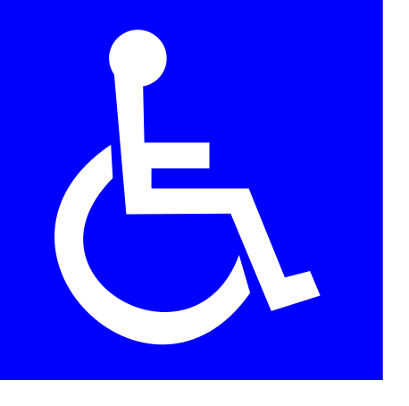

Information Page
San Juan City's Inclusive, Navigable, and Accessible Guide
With the heavy congestion of people in urban areas, accessibility for many people is compromised, thus making navigation more difficult. Often, differently-abled persons struggle with travelling and navigating places as sidewalks, ramps, elevators, and whatnot are hampered, undermaintained, and treated with little to no importance.
This is why Project SINAG has been created.
It aims to provide a community-based information-sharing platform about the accessibility of frequented places in cities, which is often not reflected in other maps or platforms. By extension, this project aims to raise awareness on the importance of accessibility and the struggles of differently-abled persons, the elderly, and other vulnerable groups in navigating places. Project SINAG also aims to encourage businesses and establishments to improve their accessibility features and to advocate for better urban planning and infrastructure that considers the needs of all individuals in the sprawling metro.
International Symbol of Accessibility

This is the International Symbol of Accessibility. Designed by Rehabilitation International, it is a universal symbol that is used by organizations and establishments to indicate accessibility features for differently-abled people.
Laws and Rights
Government Agencies and Offices
-
National Council on Disability Affairs (NCDA)
- Address: NCDA Building, Isidora Street, Barangay Holy Spirit, Diliman, Quezon City
- Contact: (632) 5310-4759 to 63; (632) 8932-3663; (632) 8932-6422
- Email: council@ncda.gov.ph
-
San Juan City's Persons with Disability Affairs Office (PDAO)
- Address: Pinaglabanan Corner Naraso, San Juan City
- Hotline: 137-135
- Email: publicinfo@sanjuan.gov.ph
-
Department of Social Welfare and Development (DSWD)
- Address: Legarda St, 389 San Rafael St, Quiapo, Manila City
- Hotline: (02)733-0010 to 18
- Email: foncr@dswd.gov.ph
- Services:
- Assistance to Individuals in Crisis Situations (AICS)
- Wireless Mental Health and Psychosocial Support (WiSUPPORT) Program
- Sustainable Livelihood Program (Inquire at the address provided above)
- KALAHI-CIDSS Cash for Work Program
Commitment to W3C
Commitment to W3C:
Project SINAG is committed to following web accessibility guidelines to ensure that all users, including those with disabilities, can access and use the information and services in the website.
For the Future
Currently, Project SINAG's scope is for San Juan City only. And even so, it is not fully comprehensive.
However, it will not always remain that way.
I want to expand the project to other Metro Manila cities in the future. To make this happen, I will need your help in adding locations through the suggestion form and commenting on the existing location entries to provide more accurate and comprehensive information on accessibility.
By contributing and being part of this initiative, you are directly helping more and more people, especially differently-abled persons, in alleviating their struggles and navigating their daily lives more easily.
However, this project may seem like a bandage solution to the larger issue of accessibility in urban places---which it sadly is. The real problem is rooted in the lack of competency and care of the government and the private sector in regulating and implementing accessibility features in urban planning and infrastructure, which is driven, of course, by the systematic corruption and greed that prevail in the government.
This is why, through such public participation in initiatives like this, public awareness can follow suit. And with public awareness comes a more sound advocacy in demanding more accessible & inclusive cities at the administrative & street level and in demanding transparency and corruption takedown.
The fact that this initiative was started in the first place is quite sad, as it serves as a testament to how insane corruption and the state of accessibility have become.
Accessibility, just like all other things, is political and indeed deeper than it seems.